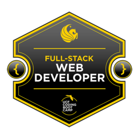

About Me

Hi, My name is Hitomi.
My career started in Japan as COBOL Programmer for 3 years, then System Engineer for 4 years in SIers working on Oracle EBS Add-on and Maintenance. Later, I joined Oracle Japan and worked as Customer Support Technical Engineer for Oracle EBS (All Financial Products) for 9.5 years with skill to analyze complex customer's issues with focus on their satisfaction and good experience.
In 2014 I moved to US Oracle by internal transfer and started a new career as Non-technical engineer in thie US. Mainly I'm working as translator in English/Japanese for technical inquiries into almost all Oracle Products. I'm always rated as top-performer (more than 130% of team average) and in 2015 - received Annual team award in Oracle.
I enjoy lerning new thing to improve my self/ my skills. I went to a grad school to learn Clinical psychology for 2 years to do volunteer activity for Earthquake victims in Japan. (Unfortunately I needed to drop out of the school to accept the transfer offer. But I will continue the learning in the future)
In 2019 in order to put myself technical field again and expand my career opportunities I graduated from UCF Coding Boot Camp (Full-Stack Web Development) after learning the following technology/languages: HTML5,CSS3,JavaScript,jQuery,Node.js,Responsive Design,Heroku,Git,User Authentication,PHP frameworks like Laravel,React.js,MySQL and MongoDB.
|  |
|---|